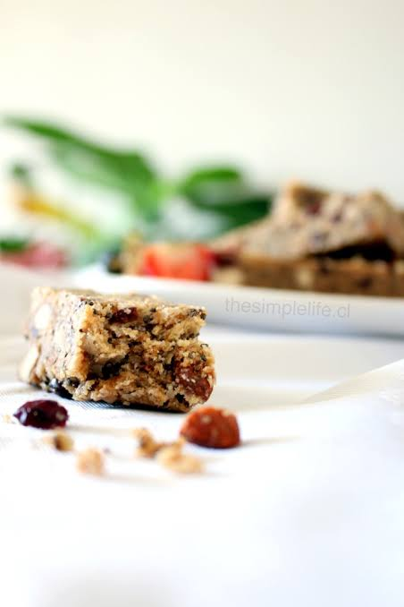

Barras de Avena y Miel Caseras

Esta es la receta independiente que más te sirve para no volver a caer en comprar comida criminal en la calle. La llevas en la mochila y te salva. En esta receta, horneamos avena con miel, proteína en polvo y maní picado, creando una barra crujiente por fuera y suave por dentro que sabe a galleta pero es 100% fit. Además, haces 8 de una vez y tienes snack para toda la semana.